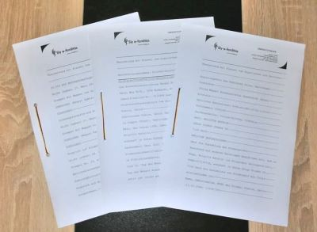
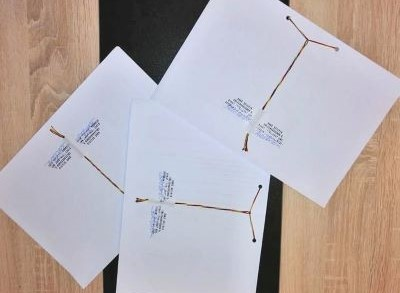

Szolgáltatásaink
Magyarországon 2007-től foglalkoztunk fordításszervezéssel. majd Németországba áttelepülve most, új
weboldallal, de a régi megszokott minőségben és természetesen a már jól bevált fordítói csapattal
vállaljuk magánszemélyek és vállalkozások anyagainak fordítását, lektorálását.
Normál fordítás
Az alábbi témakörökben készítünk gyors és minőségi fordításokat:
- - általános szövegek, céglevelezés
- - közgazdaság, pénzügy, bankügy
- - jog, politika
- - egészségügy, vegyészet, gyógyszerészet, környezetvédelem
- - idegenforgalom, kereskedelem, művészet
- - műszaki: audió termékek leírása, számítástechnika, építőipar, villamosság
ÚJDONSÁG: a németországi mindennapos élethez szükséges nyomtatványok fordítása.
A munkát elvégző fordító(k) kiválasztásakor figyelembe vesszük a fordító szakmai háttértudását,
gyakorlatát és a határidőt a mennyiség függvényében.
Tanúsított, záradékkal ellátott fordítás

Kérésre az okmányok, szerződések fordítását az adott nyelven záradékkal és bélyegzővel látjuk el,
tanúsítva, hogy a fordítás tartalmilag és szerkezetileg megegyezik az eredeti anyaggal. A
formázás
kizárja az utólagos szövegbe írás lehetőségét, javítását. A záradék tartalmazza a munkát elvégző
szakfordító nevét is, aki garantálja a fordítás helyességét és az egyezőséget.

Fontos megemlíteni, hogy ez nem azonos a hitelesített fordítással! Bizonyos esetekben nem
elegendő az
általunk záradékolt fordítás (pl. bírósági eljárások során), hiteles fordításra van szükség.
Megrendelés előtt kérjük tájékozódjon, hogy Önnek melyikre lesz majd szüksége!
Lektorálás
A lektorálás nélküli normál fordítás esetén a szakfordító által készített anyagok nyersfordítása
készül el, ahol a nyelvi érthetőség az elvárás.
A célnyelvre lefordított szövegeket a megrendelő külön kérésére lektoráljuk, azaz
nyelvhelyességileg, szakmailag, illetve stilisztikailag ellenőriztetjük. A lektorálást minden
esetben anyanyelvi szakképzett fordító végzi, így a szövegbe nem illeszkedő szakkifejezések és
apróbb szerkezeti hibák javításra kerülnek.
Jogi érvényű szövegek, nyomdakész anyagok, valamint speciális szakszövegek fordításáért csak
lektorálás mellett vállalunk felelősséget.
A megrendelés folyamata
Árajánlat kérés
Bizonyítványok, nyomtatványok fordítása esetén nem szükséges árajánlatot kérnie, ezeket kedvező
egységáron készítjük el Önnek. Minden egyéb fordítandó szöveg esetén töltse ki az ajánlatkérés oldalon a
szükséges adatokat, majd
töltse fel a fordítandó dokumentumot. Ez alapján fogjuk elkészíteni az árajánlatot. Az árajánlat ingyenes,
abban az esetben is, ha az árajánlat megtekintését követően Ön mégsem rendeli meg a fordítási munkát.
Árajánlat elkészítése
A fordítások elszámolása az elkészült fordítás (célnyelvi szöveg) karakterszáma alapján történik,
tehát az árajánlat tájékoztató jellegű, a pontos díj meghatározása csak az elkészült fordítás
alapján lehetséges. Általánosságban elmondható, hogy az árajánlathoz viszonyítva +/- 10% eltérés
tapasztalható a nyelvek terjedelme közötti különbségek miatt (pl. magyarról német nyelvre
fordításnál +10% az eltérés, mivel a német szavak hosszabbak a magyarnál).
Karakternek számít minden betű, szóköz, szám és írásjel, mely ellenőrizhető a Microsoft Word
szövegszerkesztő által (Menü/Eszközök/Szavak száma/Karakterek száma szóközökkel).
A fordítás megrendelése
Rendelését leadhatja elektronikus úton és postai úton levélben (minden esetben írásban) a célnyelv, a
megrendelés határidejének és az elkészült fordítás átvételi módjának pontos megadásával.
A megrendelések elküldésénél vegye figyelembe, hogy azt anyagi következmények nélkül lemondani
mindössze a leadástól számított 2 órán belül lehetséges!
A fordítás kifizetése
Elektronikus kézbesítés esetén e-mailben küldjük Önnek az elkészült fordítást és a végösszegről
kiállított számlát. A számla kifizetése átutalással történik 1 hetes fizetési határidővel.
Postai kézbesítés esetén az elkészült fordítást és a számlát nyomtatva, levélben küldjük el Önnek.
Ez esetben a számla végösszege a postaköltséggel növelve kerül kiállításra 1 hetes fizetési
határidővel.
Postaköltség Németország területén belül: Postaköltség európai országokba: